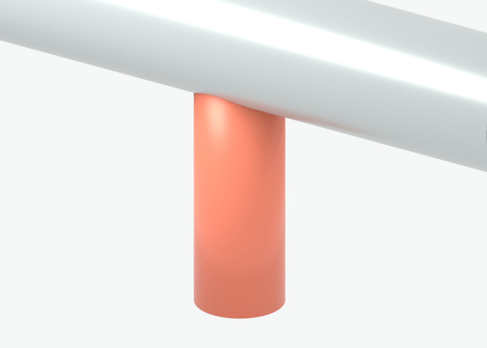
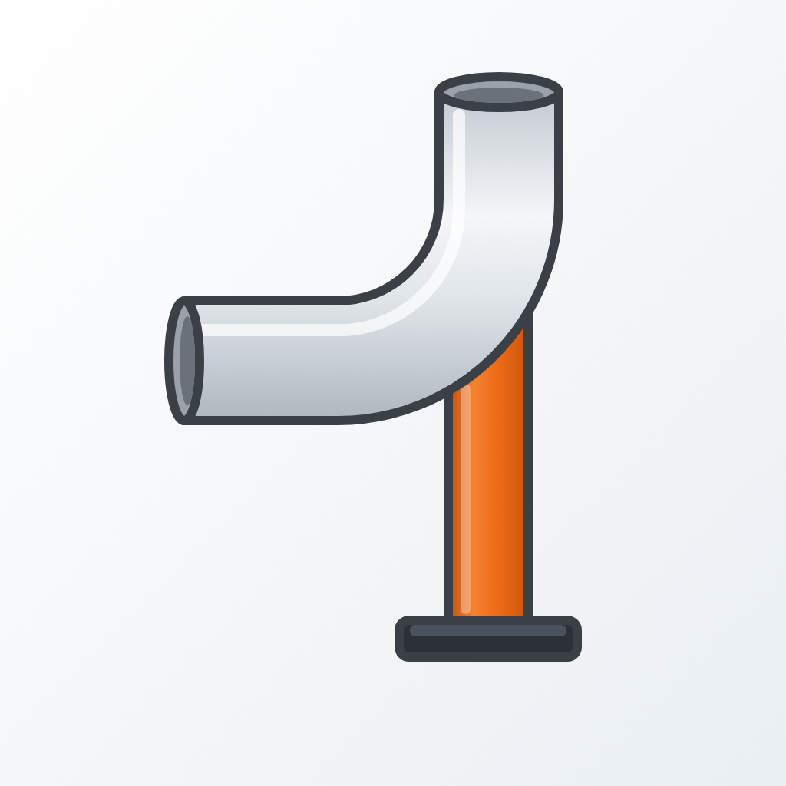
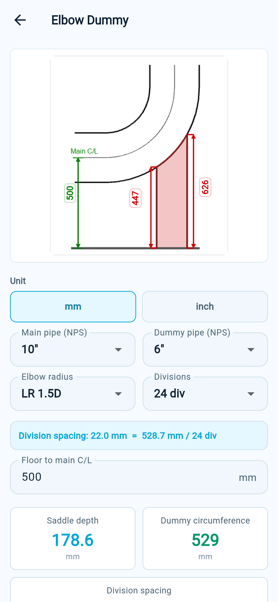
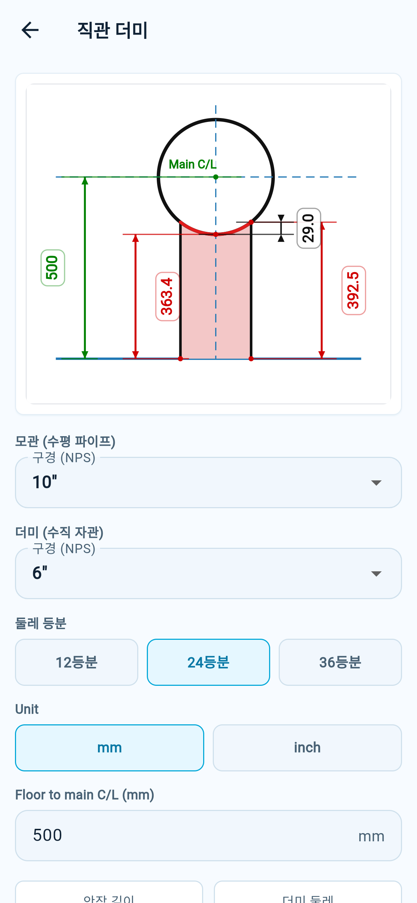
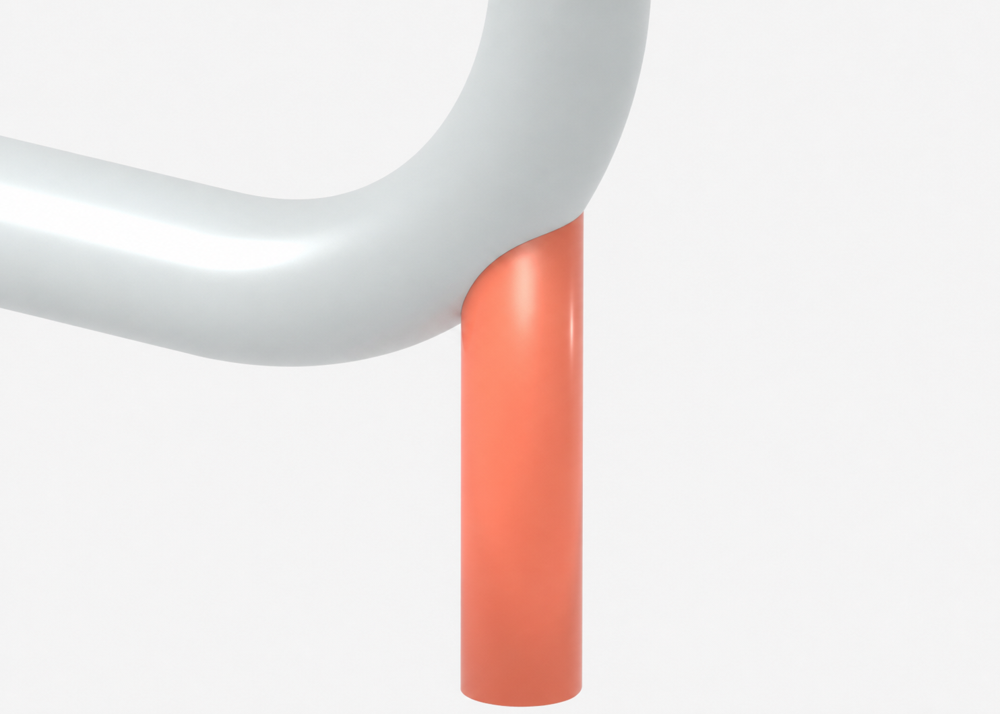
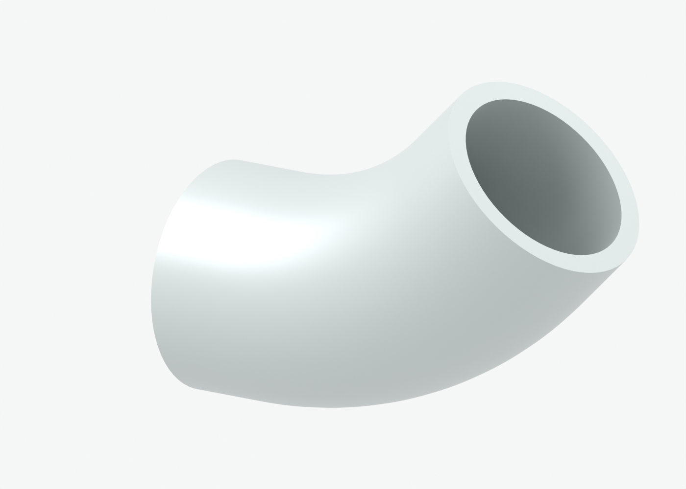

직관 더미
수평 모관 위에 수직으로 붙는 더미 파이프의 fishmouth 새들 컷을 계산합니다.

Dummy Support Calculator입력값을 바탕으로 전개 곡선, 단면 치수, 좌표표를 출력합니다. PDF로 내보내서 프린트하거나 공유할 수 있습니다.


직관적인 형상 선택 후 NPS, 중심 높이, 목표 각도 같은 핵심값만 입력하면 됩니다.

수평 모관 위에 수직으로 붙는 더미 파이프의 fishmouth 새들 컷을 계산합니다.

엘보 곡면 위에 붙는 더미의 원통-토러스 교차 전개선을 계산합니다.

표준 45도 또는 90도 엘보를 목표 각도로 절단하기 위한 배면과 목면 길이를 산출합니다.
앱은 이름, 이메일, 전화번호, 위치 같은 직접 식별 정보를 자체 수집하지 않습니다. 무료 버전 광고 표시에 필요한 정보 처리는 개인정보처리방침에서 확인할 수 있습니다.